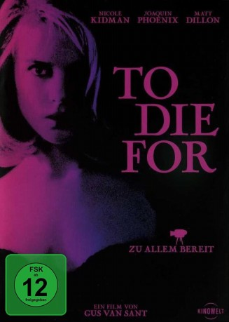
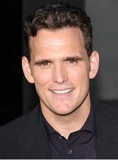
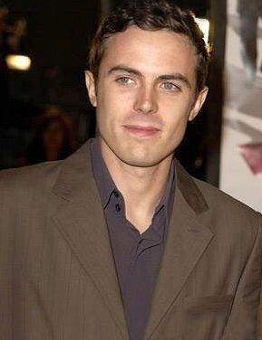
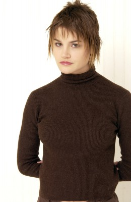
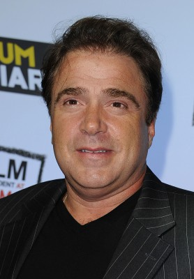
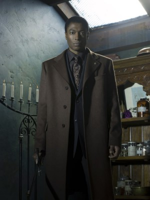
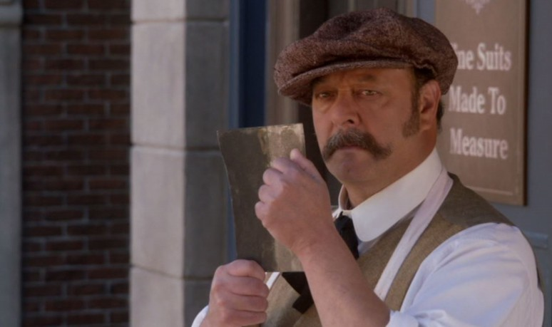

#9536 To Die For
Auszeichnungen: 1 GoldenGlobes gewonnen
 
 IMDB-Wertung: 6.8 / 10
IMDB-Wertung: 6.8 / 10  Tomatometer: 88
Tomatometer: 88  Metascore: 0
Metascore: 0 
Schon im Kindesalter ist sich Suzanne Stone aus dem verschlafenen Nest Little Hope in New Hampshire sicher, dass sie Karriere beim Fernsehen machen will. Dank ihrer Hartnäckigkeit ergattert sie bei einem kleinen kommunalen Sender einen Job als Wettermoderatorin, den sie mit großer Ernsthaftigkeit und Penibilität ausfüllt. Doch dann gibt ihr treuherziger Ehemann Larry plötzlich Widerworte und konfrontiert Suzanne mit seinem Kinderwunsch. Der durchtriebenen Karrierefrau passt das natürlich überhaupt nicht.
Jahr: 1995
Dauer: 106 Minuten
FSK: 12
Land: USA Studio: Columbia Pictures CorporationTonspuren: DD5.1 - ,
Untertitel:
Auflösung: 1080p (1920x1040) Größe: 7004 MB
Genre: Drama, Komödie, Krimi
Regisseur:  Gus Van Sant
Gus Van Sant
Drehbuch: Joyce Maynard, Buck Henry
Soundtrack: Danny Elfman
Darsteller:
 Nicole Kidman als Suzanne Stone
Nicole Kidman als Suzanne Stone-  Matt Dillon als Larry Maretto
 Joaquin Phoenix als Jimmy Emmett
Joaquin Phoenix als Jimmy Emmett-  Casey Affleck als Russel Hines
 Illeana Douglas als Janice Maretto
Illeana Douglas als Janice Maretto-  Alison Folland als Lydia Mertz
 Dan Hedaya als Joe Maretto
Dan Hedaya als Joe Maretto Wayne Knight als Ed Grant
Wayne Knight als Ed Grant Kurtwood Smith als Earl Stone
Kurtwood Smith als Earl Stone Holland Taylor als Carol Stone
Holland Taylor als Carol Stone Susan Traylor als Faye Stone
Susan Traylor als Faye Stone- Maria Tucci als Angela Maretto
- Tim Hopper als Mike Warden
-  Michael Rispoli als Ben DeLuca
 Buck Henry als Mr. H. Finlaysson
Buck Henry als Mr. H. Finlaysson-  Conrad Coates als Weaselly Guy
- David Collins als Reporter
- Janet Lo als Reporter
- David Cronenberg als Man at Lake
-  Philip Williams als Babe Hines
- Kyra Harper als Mary Emmett
- Adam Roth als Band Member
- Tamara Gorski als Girl at Bar
- Katie Griffin als Girl at Bar
- Chris Phillips als High School Soccer Player (uncredited)
- Rain Phoenix als Tambourine Player in Band (uncredited)
 George Segal als Conference Speaker (uncredited)
George Segal als Conference Speaker (uncredited)- Gerry Quigley als George
- Tom Forrester als Fisherman
- Alan Edward Lewis als Fisherman
- Nadine MacKinnon als Sexy Woman
- Ron Gabriel als Sal
- Ian Heath als Student
- Graeme Millington als Student
- Sean Ryan als Student
- Nicholas Pasco als Detective
- Joyce Maynard als Lawyer
- Eve Crawford als Reporter
- Tom Quinn als Skating Promoter
- Peter Glen als Priest
- Amber-Lee Campbell als Suzanne (Age 5)
- Colleen Williams als Valerie Mertz
- Simon Richards als Chester
- Susan Backs als June Hines
- Andrew Scott als Band Member
- Carla Renee als Girl at Bar
- Mischa als Walter
- Melissa Cooper als High School Girl (uncredited)
- Tom Peterson als TV Commercial (uncredited)
- Isabella Simone als High School Student (uncredited)
Datei: X:\1995\To Die For (1995, FSK12, 1920x1040).mkv seit 06.09.2018
Festplatte: HD 1992-1995
 Es gibt insgesamt 85 Filme in der Gruppe '1995'
Es gibt insgesamt 85 Filme in der Gruppe '1995'